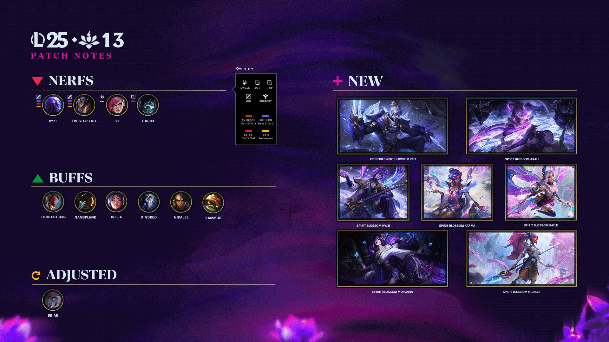

Ryze, Vi, Fiddle… Ce que change (vraiment) le patch 25.13 avant les playoffs
Déployé le 17 juin 2025, le patch 25.13 propose des nerfs ciblés (Ryze, Twisted Fate, Vi…) pour tempérer les champions trop performants, tout en soutenant quelques picks sous-estimés.Riot Games justifie ces changements légers par une méta jugée globalement équilibrée, et vise à éviter qu’un champion ne domine outrageusement le global pool, notamment en tournoi.À surveiller : les performances de Ryze en phase de groupe MSI, désormais légèrement limitées.
Lire l’article